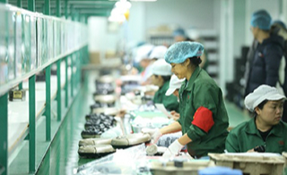
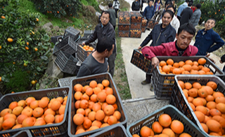

热点资讯
-

-

-

热点资讯
-
24小时爆卖15万斤云南小黄姜，拼多多推动扶贫助农“蒙自模式”
转自：赛迪网 2018.12.18 - 转自：正北方网 2018.12.18
-
新疆巴楚与拼多多达成电商扶贫战略合作 首个拼多多扶贫车间落户南疆
转自：东方网 2018.12.18 -
正北方拼多多12.12：品牌下乡农货进城 物流订单增长近4倍网
转自：中国新闻网 2018.12.18 - 转自：光明网 2018.12.18
- 转自：新浪财经 2018.12.18